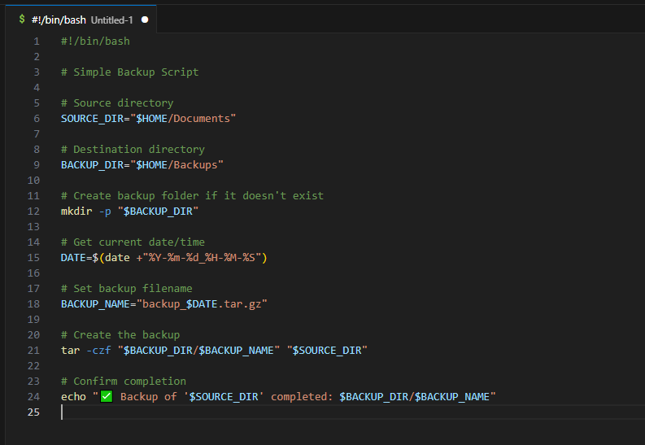
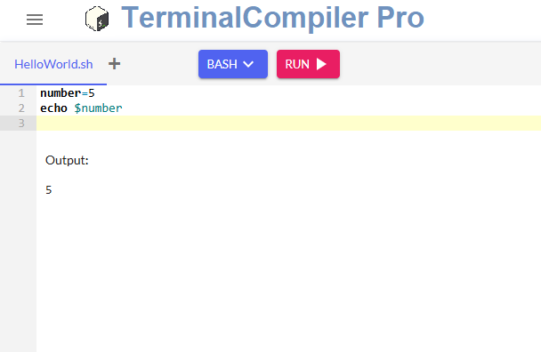
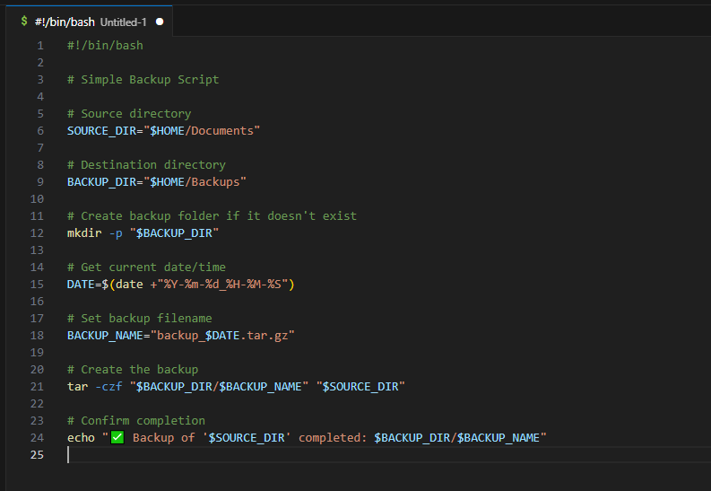
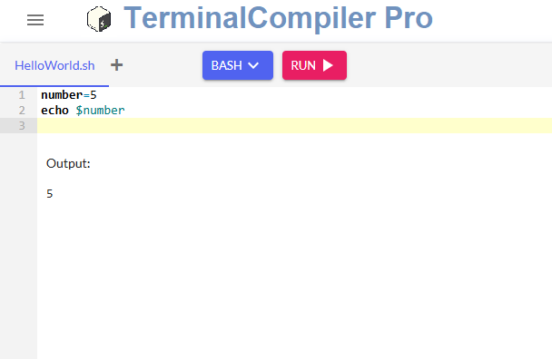

Shell scripting is a way to automate tasks and interact with the operating system directly through terminal commands written in plain text files.
Bash is preinstalled on most Unix-like systems. To check if Bash is available:
bash --version
If it's not installed:
sudo apt install bash
 



.sh extension. Make it executable with chmod +x filename.sh, then run with ./filename.sh